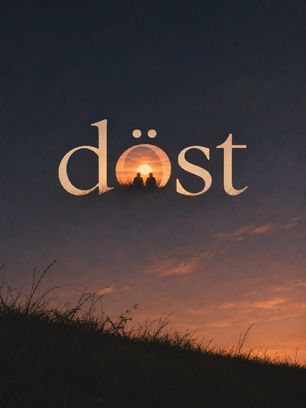

Döst

Bir kişi maşhur nahv olimi Mubarridga şunday dedi:
— Falonçi meni haqorat qildi, men esa sabr qildim va jim turdim. Keyin u seni haqorat qildi, men esa seni özim bilan teng körib, yana jim turdim!
Mubarrid unga javob berdi:
– Bu ikki holat bir xil emas. Sen özingga yetgan ozorga sabr qilsang, bu hilm (yumşoqlik)dir. Ammo döstingga yetgan ozorga sabr qilsang, bu xiyonatdir!
Kim döstining qalbida bölsa, u öşa yerda bölmasa ham heç qaçon uning qalbidan ğoyib bölmaydi!
Nabiy sallollohu alayhi va sallam Tabukda Ka’b ibn Molik roziyallohu anhuni yöqlab dedilar:
“Ka’b qayerda?”.
Bir kişi:
“Uni bu yerga kelişdan çiroyli kiyimi va öziga boqib yurişi uşlab qoldi!”, – dedi.
Ya’ni, uni Tabuk ğazotiga çiqişdan kiyimlari man qildi, demoqçi edi. Bu öz navbatida ğiybat edi.
Şunda Muoz ibn Jabal roziyallohu anhu örnidan turib:
“Juda ham yomon gap aytding. Ey Allohning Rasuli, biz undan faqat yaxşilik körganmiz!” – dedi.
Döstingiz ruhingizning şerigidir. U qalbingizning bir bölagidir!
Şuning uçun uning ğiybat qilinişiga indamasdan qarab turmang. Heç kimga uni tili bilan öldirişiga yöl qöymang. Aks holda siz döstlikka loyiq emassiz!
Rasululloh sallollohu alayhi va sallam sahobalarni Rizvon bay’atiga çaqirdilar. Bu ölimga tayyor holda berilgan bay’at edi.
Rasululloh sallollohu alayhi va sallam qöllarini çözib, har bir sahobadan bay’at oldilar. Ammo Usmon ibn Affon roziyallohu anhu Makkada edi. Uni Qurayş uşlab qolgan edi.
Şunda Rasululloh sallollohu alayhi va sallam özlarining çap qöllarini kötarib, öng qöllariga qöyib: “Bu Usmonning qöli!” – dedilar.
Qarang, döstlik qanday bölar ekan!
Usmon roziyallohu anhuning qöli bu yerda yöq edi, ammo dunyoning eng muborak qöli uning örnini töldirdi!
Agar men yöq bölsam, ğiybatimni qilmang. Men haqimda yomon gap eşitsangiz, işonmang. Mendan söramay turib heç kimning gapiga quloq solmang. “Şamol bölmasa daraxtning uçi qimirlamaydi!” – demang.
Agar hamma meni ayblasa ham, Siz menga işoning, siz meni oqlang. Çunki odamlarning ayblaşi emas, döstimning mendan şubha qilişi yuragimni ezadi!
Jaloliddin Rumiy Şams Tabriziy haqida şunday degan ekan:
“Agar u: "Men sizlarning oliy Robbingizman!" – desa, men: “ U oyat tilovat qilmoqda!” – der edim. Agar uning soqolidan aroq tomib turganini körsam: “Uning ustidan aroq tökilgan!” – der edim!!!”
AbdulQodir SAMARQANDIY